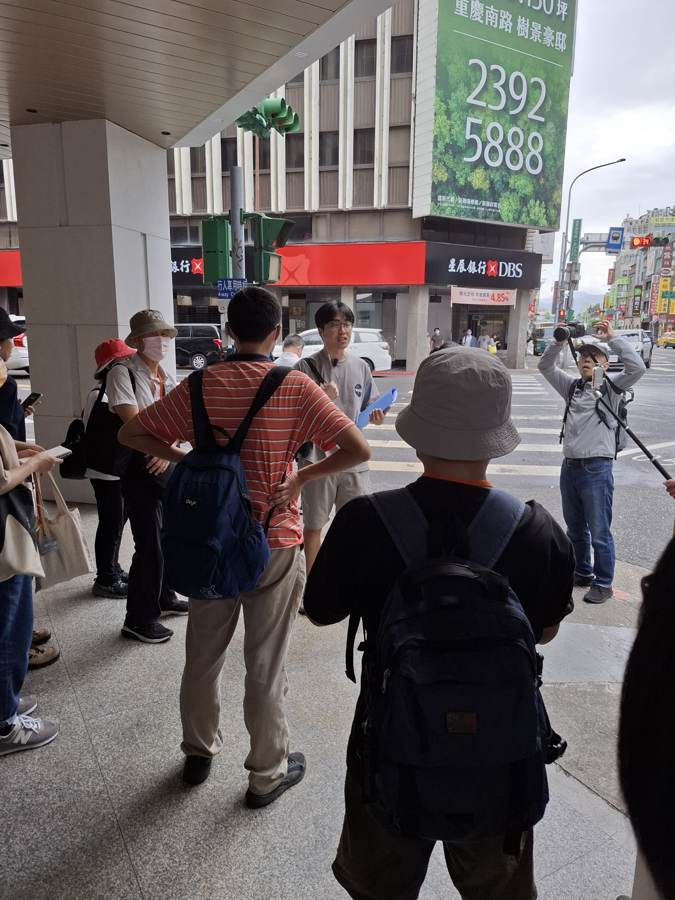
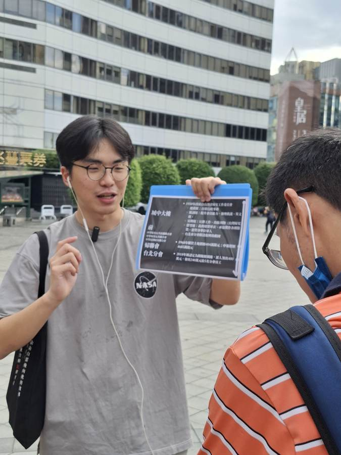
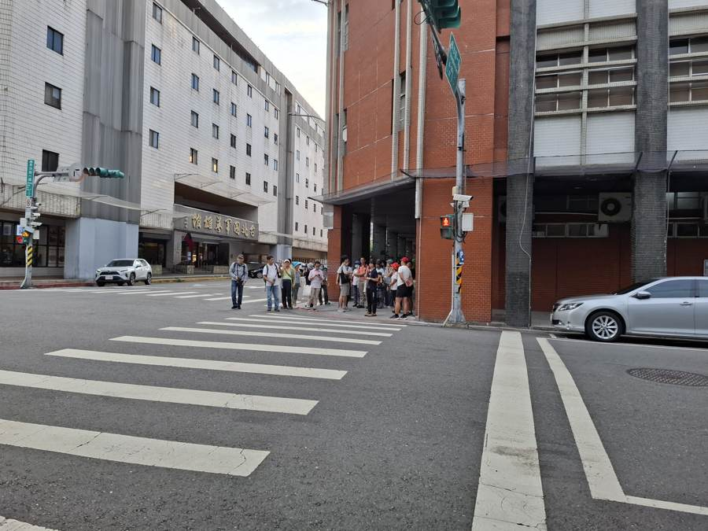
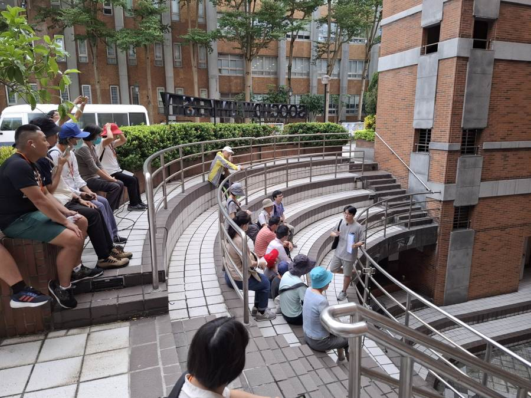
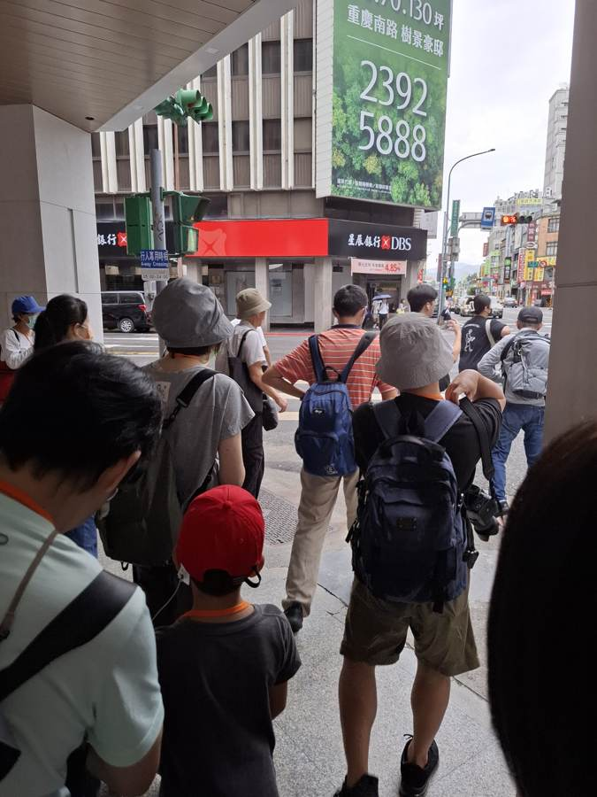

衡陽路 64 號
裕台公司舊總部，公有資產從轉帳撥用走向後來出售。
轉帳撥用從呷米友善餐廳出發，沿衡陽路、延平南路與寶慶路，辨認行政資產、黨營事業與城市日常如何交疊。
城中區看似熟悉，卻把戰後資產流轉的路徑疊在日常街景裡。沿著五個地址行走，從裕台公司、婦聯會、中影到傅正留下的思想現場，公有資產如何成為黨產，逐一回到可以指認的街角。
這場走讀把法律名詞放回建築、招牌、道路與人的視線。地址不只是地標，也是制度留下的證詞。
每一站都把一種制度手法放回實際位置，從街角的建築尺度讀到公文與法律的重量。
裕台公司舊總部，公有資產從轉帳撥用走向後來出售。
轉帳撥用婦聯會台北分會以公告現值七折取得房地。
低價取得前新世界戲院，日產接收後撥歸經營的文化資產。
日產接收前婦聯總會房地，交織借用、續借與公款購地。
公款買地傅正的文章把房地產問題帶回民主制度與個人選擇。
思想現場建築立面、街道視線和導覽當下的停留，讓抽象的資產史重新有了尺度。
集合後沿街出發，行走本身就是方法。人群如何在街角停下、轉身、抬頭，決定了哪些細節會被看見。

衡陽路 64 號的前身與裕台公司相連。當建物仍在營業，名稱與所有權的變化反而更容易被日常遮住。

前新世界戲院的故事提醒我們，黨產不只存在於土地與房屋，也存在於影像、戲院與著作權等文化生產。

前婦聯總會房地的取得過程，交織借用、續借、補助購地與餘款免還。站在現場，制度文字和建築尺度同時進入視野。

傅正於 1960 年在《自由中國》發表文章，把房地產問題帶回民主制度與個人選擇。最後一站讓路線從地址走向公共記憶。
沿途反覆出現的取得方式，構成這場走讀的閱讀框架。
政黨或其附隨組織以違反民主法治原則，或以無償、顯不相當對價取得的財產，可能被認定為不當黨產。
轉帳撥用、低價取得、日產接收、公款買地與餘款免還，讓同一區域出現不同的資產取得模式。
茶行、商業大樓、法院與校園只在同一段步行時間裡同時成立。這種視線關係離開現場就很難完整重現。
點選任一照片放大，使用左右方向鍵切換，按 Esc 關閉。

這頁記下的是 2024 年 10 月 26 日下午的實地走讀。